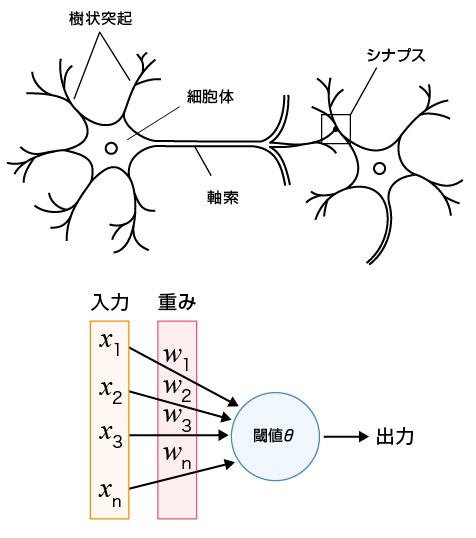
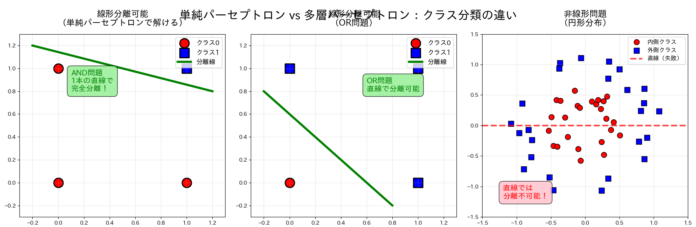
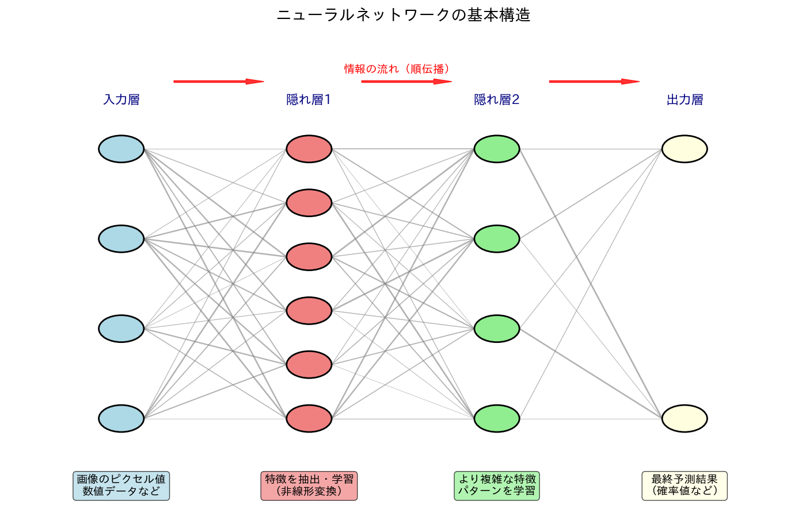
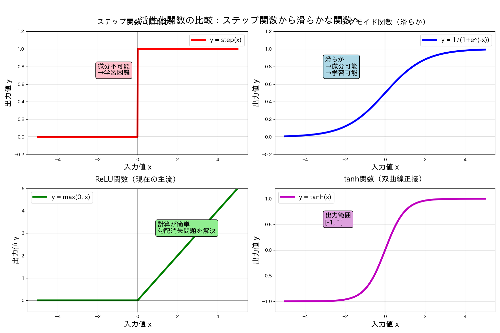
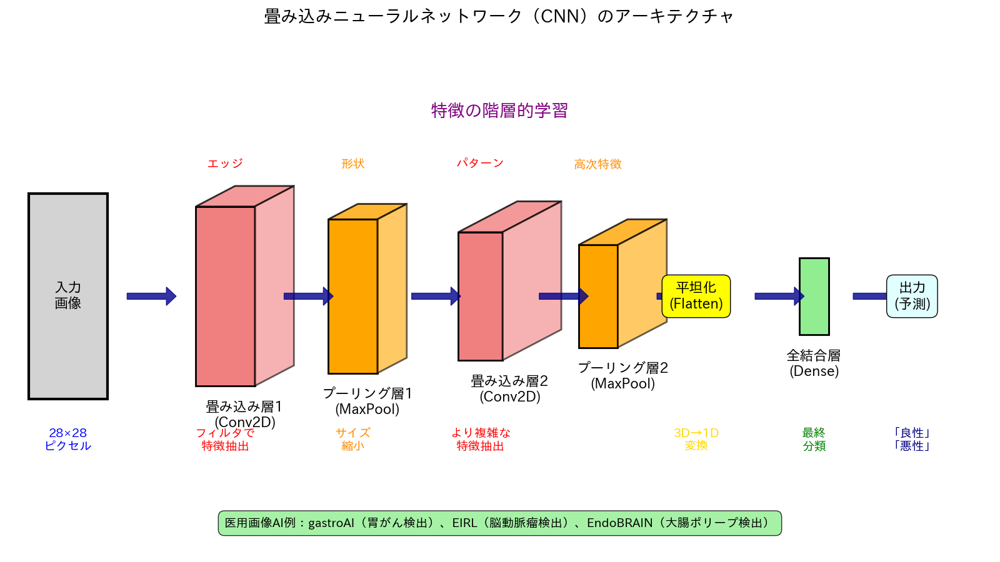
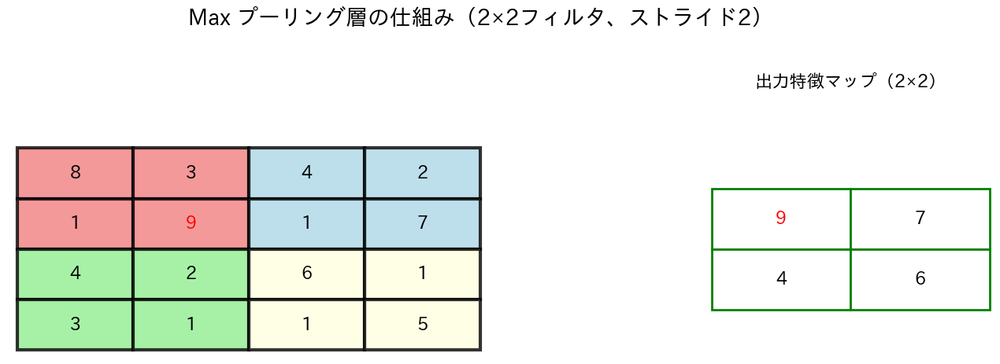

13.AI・機械学習による医用画像解析
1. 導入・概要
本日は、画像処理・パターン認識の分野を大きく変革したAI（人工知能）、機械学習、深層学習（ディープラーニング）技術が、医用画像解析においてどのように応用されているかを学びます。
これまでの講義（第11回・第12回）で扱った数理的な画像処理アルゴリズムの基礎を踏まえ、それらが現代のAI手法とどのように繋がり、何がブレークスルーとなったのか、その全体像と定義を整理していきましょう。
1.1 「AI」「機械学習」「深層学習」の定義と関係性
これら3つの言葉は、それぞれ独立した技術ではなく、以下のような明確な包含関係（入れ子構造）を持っています。
-
AI（人工知能：Artificial Intelligence） 【最も広い概念】
- 定義：明確な定義はない。人間の思考プロセス（推論、認識、判断、学習など）と同じような形で動作するプログラム、あるいは人間が知的と感じる情報処理・技術といった広い概念で理解されている（総務省HPより）。
- 人間がプログラムした固定のルール（例：「輝度値が特定の範囲なら対象物とみなす」）に従って動作するシステムも、広い意味でのAI（ルールベースAI）に含まれます。
-
機械学習（マシーンラーニング：Machine Learning） 【AIの一部】
- 定義：人間がすべてのルールを書き下すのではなく、コンピュータに大量のデータを与え、データに潜むパターンや統計的な規則性をアルゴリズムによって自動で学習させる技術。
- 予測や分類の基準（境界線など）を、データに基づいてコンピュータ自身が最適化（フィッティング）していきます。
-
深層学習（ディープラーニング：Deep Learning） 【機械学習のさらに一部】
- 定義：人間の脳の神経回路（ニューロン）を模した「多層ニューラルネットワーク」を発展させ、ネットワークの層を深く（ディープに）重ねることで、高度な表現力を獲得した技術です。
- 画像や音声といった、情報量が非常に多く複雑なデータから、認識に必要な「特徴」そのものをコンピュータが自動的に見つけ出すことができます。近年の画像認識の飛躍的な精度向上は、この技術が源泉となっています。
1.2 従来手法（前回までの講義）とAI手法のマッピング
皆さんが第11回（セグメンテーション）と第12回（Registration）の講義で学んだ具体的な技術が、この全体像の中でどこに位置づけられるのか、アルゴリズムの特性とあわせて比較してみましょう。
| 講義回 | 扱った具体的なアプローチ | 技術の分類 | アルゴリズムの特徴 | メリットと限界 |
|---|---|---|---|---|
| 第11回 | 閾値処理、領域成長法、エッジベース手法 | 従来の画像処理 （ルールベース） |
人間が特定の数理的ルール（エッジ検出フィルタや閾値）を設計して適用する。 | 処理のプロセスが明快。ただし、画像のノイズや個体差、コントラストのばらつきに弱い。 |
| 第11回 | k-means法（クラスタリング） | 機械学習 （教師なし学習） |
データの輝度分布などの特徴から、アルゴリズムが自動的にグループ（クラスタ）の境界を決定する。 | 人間が手動で境界を決めなくてよい。ただし、あらかじめクラスタ数を指定する必要があるなどの制約がある。 |
| 第12回 | 相互情報量やSSDを用いた反復最適化による位置合わせ | 従来の画像処理 （数理・最適化ベース） |
2枚の画像の「ズレ」を示す数理指標を計算し、それが最小（または最大）になるまで、何度も変形と評価を繰り返す。 | 数学的な整合性が高い。しかし、適切な変形パラメータを見つけるための反復計算に膨大な時間（数分〜数十分）がかかる。 |
| 本日 （第13回） |
U-Net（セグメンテーション） VoxelMorph（Registration） |
深層学習 （ディープラーニング） |
大量の「入力画像」と「正解（医師の境界データや正解の変形場）」のペアから、最適な変換ルールをエンドツーエンドで自動学習する。 | 事前学習に時間はかかるが、学習後は一瞬（数秒）で高精度な処理（推論）が可能になる。 |
1.3 なぜ今、画像解析で「深層学習」を学ぶのか？（2つのブレークスルー）
情報科学の視点から、従来のアルゴリズムに対する深層学習の圧倒的な優位性は、次の2点に集約されます。
1. 「特徴量設計」の自動化（表現学習）
従来の機械学習や画像処理では、「画像のどこに注目すべきか（エッジ、テクスチャ、形状特徴など）」を人間（エンジニアや専門家）が頭をひねって設計し、アルゴリズムに教える必要がありました。 しかし、深層学習は画像データをそのまま入力するだけで、「どの特徴に着目すれば正確に識別・分割できるか」という特徴量抽出のプロセス自体を自動的に学習します。これにより、人間の認知を超えた複雑なパターンを捉えることが可能になりました。
2. 計算コストの先払いによる「リアルタイム性」の実現
第12回で学んだ従来の位置合わせ（Registration）は、新しい画像が来るたびに、その場で何百回・何千回もの反復計算を行うため、処理時間がボトルネックとなっていました。 これに対し、本日学ぶ深層学習（VoxelMorphなど）の手法は、膨大な計算コストを「事前の学習（モデルの訓練）」の段階ですべて先払いしておきます。一度学習が完了したモデル（ネットワーク）を使えば、新しい未知の画像が入力された際は、ネットワークを1回通過させるだけ（順伝播：Forward Propagation）で、わずか数秒で処理が完了します。この劇的な高速化が、動的な画像誘導下の手術ナビゲーションや、大量の画像を瞬時に処理するリアルタイム診断システムの実装を可能にしました。
2. 機械学習・深層学習の基礎
AIを理解するために、その中核技術である機械学習と深層学習の基本を学びましょう。
2.1 機械学習の基本概念
機械学習（Machine Learning）の本質は、「手元にあるデータから特徴や規則性を抽出し、未知のデータに対しても正しく予測・判断できる能力（汎化性能）をコンピュータに獲得させること」です。
数学的には、入力 \(X\) から出力 \(Y\) を予測する関数 \(Y = f(X)\) を、データに基づいて最適化（フィッティング）するプロセスと捉えることができます。
2.1.1 学習モデルの分類
機械学習は、学習時に与えるデータの性質によって、大きく「教師あり学習」と「教師なし学習」に大別されます。
- 教師あり学習 vs 教師なし学習
- 教師あり学習 (Supervised Learning): 問題（入力データ）と正解（教師ラベル）のペアを使って学習する方法。AIにお手本を提示して覚えさせるアプローチで、医用画像解析の分野で最も広く使われています。画像から病変の有無や種類を当てたり、腫瘍の具体的な大きさを予測したりするタスクがこれに該当します。
- 教師なし学習 (Unsupervised Learning): 正解ラベルがないデータから、データに潜む構造やパターン、特徴の似たグループを自力で見つけ出す方法。前々回の授業の実習で扱った「k-means法」による画像のグループ分け（クラスタリング）は、まさにこの教師なし学習に分類されます。
2.1.2 データの分割とモデルの評価（汎化性能の担保）
機械学習において最も避けなければならないのは、「手元にある学習データ（過去のデータ）の予測は完璧なのに、新しく入ってきたデータ（未来のデータ）に対しては全く予測が当たらない」という状態です。
未知のデータに対する予測能力（汎化性能）を正しく測定するため、データセットをあらかじめ以下の3つに厳密に分割して実験を行います。
-
学習データ (Training Data)
- モデルのパラメータ（重みやバイアス）を直接最適化するために使用するデータです。モデルにとっての「教科書」です。
-
検証データ (Validation Data)
- 学習の途中で、モデルがどれくらい正しく学習できているかをチェックするために使うデータです。モデルの構造（ハイパーパラメータ）を調整するための「模擬試験」の役割を果たします。※学習データそのもののフィッティングには使われません。
-
テストデータ (Test Data)
- すべての学習と調整が終わった後、最終的なモデルの本当の実力（汎化性能）を測るためだけに一度だけ使用する完全な未知のデータです。本番の「入試問題」に相当します。
2.1.3 過学習（Overfitting）とその原因・対策
過学習とは？
モデルの表現力（複雑さ）が高すぎる、あるいは学習データが少なすぎる場合に、モデルが学習データの中に含まれる「本質ではないノイズや特異なクセ」まで過剰に暗記してしまう現象を過学習（オーバーフィッティング）と呼びます。 過学習が起きると、学習データの正解率は100%に近づきますが、検証データやテストデータの正解率は著しく低下します。
主な対策（情報科学におけるアプローチ）
過学習を防ぎ、汎化性能を高めるために、以下の手法が広く用いられます。
-
データ拡張 (Data Augmentation)
- 概要：手元にある画像データを回転、反転、拡大・縮小、輝度補正などによって人工的に変化させ、データのバリエーションを水増しする手法です。モデルが特定の「位置」や「向き」だけに依存して記憶してしまうのを防ぎます。
-
正則化 (Regularization)
- 概要：モデルの数式の中に、パラメータ（重み）の値が大きくなりすぎることを抑制する「ペナルティ項」を追加する数学的アプローチです（L1正則化、L2正則化など）。モデルの決定境界が複雑にウネウネと折れ曲がるのを防ぎ、滑らかな（シンプルな）境界線に保つ効果があります。また、深層学習ではネットワークのつながりをランダムに間引くDropout（ドロップアウト）も強力な正則化手法として使われます。
-
早期終了 (Early Stopping)
- 概要：学習のステップ（エポック）を進めていく際、「学習データの誤差」は下がり続けているのに、「検証データの誤差」が下がり止まって逆に上昇し始めた瞬間（過学習が始まったサイン）を検知し、そこで強制的に学習をストップさせる実践的なアプローチです。
2.2 深層学習（Deep Learning）入門
深層学習は機械学習の特定の系譜であり、その根底には生物の脳を模した数理モデルがあります。現代の高度なAIモデルへと至る進化の歴史を、アルゴリズムの本質とともに紐解いていきましょう。
1. パーセプトロン：ニューラルネットワークの原点
深層学習の最も基本的な構成単位（最小パーツ）が、1957年にローゼンブラットによって考考案された単純パーセプトロン（Simple Perceptron）です。これは、生物の脳にある神経細胞（ニューロン）が、他の細胞から電気信号を受け取り、一定以上の刺激になると次の細胞へ信号を伝達（発火）する仕組みを数理モデル化したものです。
数理モデルのアプローチ
パーセプトロンは、複数の入力信号を受け取り、最終的な出力を計算します。内部の計算は以下の2段階で行われます。
- 重み付き和とバイアスの計算 それぞれの入力信号に対して、固有の重みを掛け合わせ、その総和をとります。重みは「その入力情報をどれだけ重視するか」を表します（\(b\)はバイアス）。入力変数を \(x\)、重みを \(w\)、バイアスを \(b\) とすると、全体の信号の強さ \(z\) は以下の数式で表されます。
- 活性化関数による発火判定 計算された値 \(z\) が、0以上であれば「1（発火する）」、0未満であれば「0（発火しない）」として出力します。この 0 か 1 かの2値に変換するスイッチの役割を果たす関数を活性化関数（ステップ関数）と呼びます。
{kind=link}

2. 単純パーセプトロンの限界と多層パーセプトロン（MLP）
単純パーセプトロンは画期的な発明でしたが、1960年代に「線形分離可能な問題（一本の直線で2グループに綺麗に分割できる問題）しか解けない」という致命的な数学的限界が証明され、最初のAIブームは終焉を迎えます。例えば、排ただし的論理和（XOR問題）のように、データが斜めに入り組んだ分布をしている場合、一本の直線ではどうやっても正解と不正解を分離できません。
{kind=link}

この限界を克服し、ブレークスルーとなったのが多層パーセプトロン（Multilayer Perceptron: MLP）と活性化関数の導入です。
💡 隠れ層（中間層）の導入
入力層と出力層の間に、複数のパーセプトロンからなる隠れ層（中間層：Hidden Layer）を追加しました。 1つのパーセプトロンが作れるのは「1本の直線」だけですが、複数のパーセプトロンの出力を組み合わせることで、空間を複雑に折り曲げるような複雑な識別境界を描くことが数学的に可能になりました。
{kind=link}

💡 滑らかな活性化関数の導入（微分可能性の確保）
従来のパーセプトロンが使っていたステップ関数は、出力が「0か1か」の階段状であり、数学的に微分不可能（あるいは微分値が常に0）でした。これでは、モデルが予測を外したときに、「どれくらい惜しかったのか（確信度）」が分からず、重みをどう修正すれば良くなるかのヒント（勾配）が得られません。
そこで現代のニューラルネットワークでは、ネットワークの表現力を高め、数学的に最適化（計算）しやすくするために、目的や場所に応じて以下のような様々な活性化関数を使い分けます。
- ReLU（Rectified Linear Unit）関数
- 特徴：負の入力には 0 を、正の入力にはその値をそのまま出力する関数。計算が非常に高速で、層を深くしても学習が停滞しにくいため、現代の深層学習の「隠れ層（中間層）」における世界標準として使われています。
- ソフトマックス（Softmax）関数
- 特徴：複数の出力値の合計がちょうど 1（100%）になるように変換する関数。後述する「猫・犬・車」の例のような「多クラス分類問題」の「出力層」で使われます。クラスが二つの場合のソフトマックス関数はシグモイド関数と同値。
- シグモイド（Sigmoid）関数
- 特徴：どんな入力であっても、出力を必ず 0 から 1 の間の滑らかな数値に変換する関数。2クラス分類の出力層に用いる。
ここでは、最も直感的で「確率」として解釈しやすいシグモイド関数を例に、その数理的な働きを詳しく見ていきましょう。
- 数式の要素：\(z\) には先ほどの重み付き合計の数値が入ります。\(e\) は数学の定数であるネイピア数（約2.718）です。
- 関数のメリット：出力が「0.93」であれば「93%の確率で陽性」といった答えの確信度合い（確率）を表現できるようになります。そして何より、関数が滑らかで「微分可能」になったことで、モデルのパラメータを自動で最適化する道が開かれました。
{kind=link}

3. 「誤差逆伝播法」の登場：AIが自らパラメータを最適化する仕組み
活性化関数が微分可能になったことで、モデルの予測と正解との「ズレ」を定義する損失関数（Loss Function）の最小化を、数学的な傾き（勾配）を使って最適化できるようになりました。
「学習」とは、モデルの予測結果が正解に近づくように、重みやバイアスを少しずつ調整していくプロセスを指します。
📐 損失関数の定義と代表的な数式
損失関数とは、「AIの予測値が、どれくらい正解（目標値）から外れているか」を計算する数式です。この関数の出力値（損失 \(L\)）が小さければ小さいほど優秀なモデルということになり、最終的に \(L = 0\)（誤差ゼロ）に近づけることが学習のゴールとなります。
タスクの種類に応じて、例えば以下のような関数を用います。
- ① 平均二乗誤差（MSE: Mean Squared Error）
- 用途：主に「回帰問題」（病変のサイズや、腫瘍の体積などの数値を予測するタスク）で使われます。
- 数式：（データの個数を \(n\)、正解を \(y\)、予測値を \(\hat{y}\) とすると）
- 意味：「正解」と「予測」を引き算して引き起こされたズレ（誤差）を2乗し、その平均をとったものです。2乗することで、ズレがプラスでもマイナスでも必ずプラスの数値としてカウントされ、さらに「大きなハズレ」に対して重いペナルティを課す仕組みになっています。
- ② 交差エントロピー誤差（Cross-Entropy Loss）
- 用途：主に「分類問題」（画像が『正常』か『異常』か、あるいは『猫』『犬』『車』かを当てるタスク）で使われます。
- 意味：確率のズレを評価する特殊な対数（\(\log\)）の数式です。AIが自信満々に間違った（例えば、正解が猫なのに『100%車！』と予測した）ときに、損失 \(L\) が無限大に向かって爆発的に大きくなる性質を持ち、分類タスクにおいて非常に効率よく学習が進むため採用されています。
📊 損失関数による「間違い」の計算例
例えば、入力された画像が「猫」「犬」「車」のどれにあたるかを分類するタスクを考えます。 （※出力層には、合計が 1 になるソフトマックス関数が使われていると仮定します）
- 正解ラベル（目標値） 画像の正解が「猫」である場合、以下のようなベクトルで表現します。
- AIの予測出力（現在のモデルの出力） AIが画像を入力されて、以下のような確信度（確率）を出力したとします。
このとき、すべてのクラスにおける「正解と予測のズレ（二乗誤差）」を足し合わせて、AI全体の「間違いの大きさ（損失 \(L\)）」を定量化します。
実際の数値を代入して計算してみましょう。
この \(L = 0.0775\) という値が、現在のAIの「未熟さ」を表すスコアです。この値をゼロに近づける（＝猫の出力を1に、他を0に近づける）ようにパラメータを調整していくのが「学習」の正体です。
誤差逆伝播法（バックプロパゲーション：Backpropagation）
シグモイド関数やソフトマックス関数のように出力が滑らか（微分可能）になったおかげで、この損失 \(L\) から、「どの重みを、どちらの方向に、どれだけ動かせば誤差 \(L\) を減らせるか」を数学的に逆算できるようになりました。
出力層で発生した誤差を、ネットワークの「逆向き（出力層 \(\rightarrow\) 隠れ層 \(\rightarrow\) 入力層）」に伝えながら、各層の重みとバイアスを効率よく微修正していくアルゴリズムを誤差逆伝播法と呼びます。
- 順伝播（Forward）：入力をモデルに通して予測値を計算し、損失 \(L\) を求める。
- 逆伝播（Backward）：損失 \(L\) を減らすための各パラメータの修正量（勾配）を後ろの層から順に計算する。
- 更新：重みやバイアスを、誤差が小さくなる方向へ一斉に微修正する。
この効率的な学習アルゴリズムの確立によって、何層にも重なった膨大な数のパラメータを現実的な時間で最適化できるようになり、深層学習（Deep Learning）の実用化が達成されました。
4. 畳み込みニューラルネットワーク（CNN）：画像認識のデファクトスタンダード
多層パーセプトロン（MLP）をそのまま画像解析に適用しようとすると、大きな問題が発生します。画像を1次元のベクトルに引き伸ばして入力する必要があるため、「ピクセル同士の上下左右の空間的な位置関係（局所構造）」が破壊されてしまうのです。また、全結合層では解像度が上がるとパラメータ数が爆発的に増加します。
この課題を解決し、画像認識タスクにおいて圧倒的な性能を発揮するのが畳み込みニューラルネットワーク（CNN: Convolutional Neural Network）です。CNNは主に2つの特殊な層を交互に配置することで構成されます。
{kind=link}

① 畳み込み層 (Convolutional Layer) ── 特徴の抽出
画像に対して「フィルタ（カーネル）」と呼ばれる小さな行列をスライドさせながら、局所的な積和演算（畳み込み演算）を行います。
-
局所結合と重み共有：フィルタが画像の局所的な特徴（エッジ、テクスチャ、輝度変化）を捉えます。同じフィルタを画像全体に使い回す（重み共有）ため、全結合層に比べてパラメータ数を劇的に削減できます。
-
層の深化による抽象化：浅い層では単純な直線や曲線を検出し、層が深くなるにつれて、それらが組み合わさった複雑な構造（形状や物体のパーツ）を抽象的な特徴マップとして捉えられるようになります。
② プーリング層 (Pooling Layer) ── 頑健性の獲得
特徴マップを一定の領域（例：\(2 \times 2\) ピクセル）ごとに区切り、その中の最大値を取り出す（Max Pooling）などのダウンサンプリング処理を行います。
- 位置不変性の獲得：画像のサイズを小さくして情報の位置をあえて「あいまいに」することで、対象物の位置が多少ズレたり、拡大縮小したりしても、同じ特徴として頑健（ロバスト）に認識できるようになります。
{kind=link}

2.3 医用画像AIの特徴
一般的な画像（犬や猫など）を扱うAIと、医用画像を扱うAIにはいくつかの重要な違いがあります。
-
一般画像 vs 医用画像
- 次元とチャネル: 一般画像は主にRGBの3チャネルを持つ2D画像ですが、医用画像はグレースケール（1チャネル）が多く、CTやMRIのように多数のスライスを持つ3次元（Volumetric）データが基本となります。
- 解像度とデータサイズ: 医用画像は非常に高解像度かつ3次元データが多く、1症例あたりのデータサイズが巨大になる傾向があります。
- 専門知識の必要性: 医用画像の解釈には高度な医学的・解剖学的知識が不可欠です。AIの性能評価や教師データの作成には、医師や放射線技師などの専門家の協力が欠かせません。
-
データの課題
- 教師データ作成の困難さ: 質の高い教師データ（アノテーション）を作成するには、専門医が膨大な時間をかけて病変の輪郭を描くなどの作業が必要で、コストと時間が非常にかかります。
- 個人情報保護、倫理的配慮: 医用画像は究極の個人情報です。AI開発に利用する際は、患者の同意取得はもちろん、氏名やIDなどを削除する匿名化処理が厳格に求められます。
- 施設間でのデータ品質差: 撮影装置のメーカー（GE, Siemens, Philipsなど）や撮像プロトコル、再構成アルゴリズムの違いにより、施設間で画質が大きく異なる場合があります。ある施設で開発したAIが、別の施設ではうまく機能しない「汎化性能」の問題が常に課題となります。
3. 医用画像AIの主要手法
ここでは、医用画像解析で実際に使われる代表的なAIのタスクと手法を見ていきます。
3.1 分類（Classification）
画像全体に対して一つのラベルを割り当てるタスクです。
-
画像レベル分類の例:
- 胸部X線画像: 画像全体を見て「正常」か「肺炎の疑いあり」かを分類する。
- 病理組織画像: パッチ（小領域）ごとに「癌細胞あり」か「なし」かを分類する。
-
代表的なCNNアーキテクチャ:
- ResNet (Residual Network): 「スキップ接続」という構造で層を深くしても学習しやすくしたモデル。多くのAIの基礎となる。
- DenseNet: 各層がそれ以前のすべての層と密に接続する構造を持ち、特徴の再利用を促進します。
- EfficientNet: モデルの深さ、幅、解像度をバランス良くスケールさせることで、高い精度と効率を両立したモデル。
-
転移学習 (Transfer Learning)
- 何百万枚もの一般画像（ImageNetなど）で学習済みのモデルをベースとして、少量の医用画像データで追加学習（ファインチューニング）を行う手法。
- ゼロから学習するよりも効率的で、少ないデータでも高い性能を達成できるため、医用画像AI開発では必須のテクニックとなっています。
3.2 物体検出（Object Detection）
画像の中から「どこに」「何が」あるかを、バウンディングボックス（矩形）で囲って特定するタスクです。
-
病変検出の自動化:
- 肺結節検出: 胸部CT画像から、がんの可能性がある結節の位置と大きさを自動で検出する。
- 骨折検出: X線画像から骨折部位を検出する。
- ポリープ検出: 内視鏡動画からリアルタイムでポリープを検出する。
-
主要アルゴリズム:
- YOLO (You Only Look Once): 画像を一度見るだけで高速に物体を検出できるアルゴリズム。リアルタイム検出に向いています。
- R-CNN系 (Faster R-CNNなど): 領域候補抽出とクラス分類を2段階で行う高精度な手法。
3.3 セグメンテーション（深層学習版）
画像のピクセル（ボクセル）一つ一つがどのクラスに属するかを分類するタスクです。臓器や病変の精密な形状を抽出します。
-
従来手法との比較:
- 閾値処理 → U-Net: 従来手法では困難だった、境界が不明瞭な軟部組織や、複雑な形状を持つ腫瘍の輪郭も、深層学習モデル（特にU-Net）はデータから学習し、高精度に抽出できます。
- 手動輪郭描画 → 自動セグメンテーション: 医師が時間をかけて行っていた輪郭描画作業（トレーシング）を、AIが数秒で完了させることが可能になり、放射線治療計画や術前シミュレーションの効率を劇的に改善します。
-
主要アーキテクチャ:
- U-Net: 医用画像セグメンテーションのために開発された、非常に有名なモデル。エンコーダ（収縮パス）とデコーダ（拡張パス）がU字型に対称な構造を持ち、スキップ接続によって詳細な位置情報を保持できるのが特徴です。
- 3D U-Net: U-Netを3次元データ（CT, MRI）に対応させたモデル。 volumetric data を直接扱えるため、スライス間の連続性を考慮した、より正確な3次元セグメンテーションが可能です。
3.4 Registration（深層学習版）
異なる時点で撮影された画像や、異なるモダリティの画像（CTとMRIなど）を空間的に位置合わせするタスクです。
-
従来の反復最適化 → 学習ベース:
- 計算時間の大幅短縮: 従来法は画像ペアごとに反復計算が必要で時間がかかりましたが、学習ベースの手法（VoxelMorphなど）は、一度モデルを学習すれば、推論時はニューラルネットワークを一回通すだけで済み、数分〜数十分かかっていた処理が数秒で完了します。
- 複雑な変形への対応: 呼吸や臓器の動きによる複雑な非剛体変形も、データから学習することで高精度に対応できます。
-
主要手法:
- VoxelMorph: 教師なし学習（変形後画像の類似度を最大化）で変形場を直接推定する、代表的な深層学習Registration手法。
3.5 生成モデル
新しいデータを生成したり、データを変換したりするモデルです。
-
GAN (Generative Adversarial Networks):
- 生成器 (Generator) と 識別器 (Discriminator) という2つのネットワークを敵対的に競わせながら学習するモデル。「偽札を作る者」と「それを見破る鑑定士」に例えられます。
- 応用:
- データ拡張: 希少疾患など、データが少ない場合にリアルな医用画像を生成し、学習データを増やす。
- 異常検出: 正常画像のみを学習させ、入力された画像がどれだけ「正常らしくないか」をスコア化することで、予期せぬ異常を検出する。
- モダリティ変換: CT画像からMRI画像を生成する、など。
-
VAE (Variational Autoencoder):
- 入力データを一度低次元の潜在空間に圧縮（エンコード）し、そこから元のデータを復元（デコード）するモデル。
- 応用:
- 画像復元・ノイズ除去: ノイズの多い画像からクリーンな画像を復元する。
4. 倫理・法的課題と今後の展望
AIを医療に用いる上では、技術的な課題だけでなく、倫理的・法的な側面も考慮しなければなりません。
4.1 医療AI特有の倫理的課題
-
説明可能性（Explainable AI, XAI）:
- ブラックボックス問題: 深層学習モデルはなぜその結論に至ったのか、判断根拠を人間が理解するのが難しい場合があります。医師がAIの診断結果を鵜呑みにするのではなく、その根拠を理解し、最終判断を下すためには、AIの判断プロセスを可視化・説明する技術（XAI）が重要です。
-
バイアス問題:
- AIは学習データに含まれる偏り（バイアス）を学習してしまいます。例えば、特定の性別や人種のデータばかりで学習すると、それ以外の集団に対して性能が著しく低下する可能性があります。医療の公平性を担保するため、学習データの多様性に配慮することが不可欠です。
-
責任の所在:
- AIが関与した誤診が発生した場合、その責任は誰が負うのでしょうか？AIを開発したメーカーか、導入した病院か、それとも最終判断を下した医師か。明確な法的枠組みがまだ整備されておらず、今後の重要な議論のテーマです。現状では、AIはあくまで支援ツールであり、最終的な診断・治療の責任は医師にあるとされています。
4.2 薬事承認と標準化
- 医療機器としての承認プロセス: AIを用いたソフトウェアも、診断や治療に用いられる場合は「医療機器」として扱われ、日本ではPMDA、米国ではFDAによる厳格な審査（薬事承認）を受ける必要があります。有効性と安全性を証明するための臨床性能試験が必須です。
- 国際標準化動向: AI医療機器の評価方法や品質管理に関する国際的な標準規格（ISO/IECなど）の策定が進んでいます。これにより、世界中で安全かつ有効なAIが利用できる環境が整備されつつあります。
5. Google Colab実習
6. まとめ・総合討論
6.1 3回の講義を通じた学習の統合
本日の講義で、医用画像解析の技術が大きな転換点を迎えていることをご理解いただけたと思います。
- 技術の発展段階:
- 従来手法（ルールベース）: 人間がアルゴリズムを設計する、職人技の世界。
- 機械学習・深層学習: データからAIが自動で学習し、人間の能力を超える認識性能を実現する世界。
- 臨床応用の段階:
- これまで学んできたセグメンテーションやRegistrationといった古典的なタスクが、深層学習によって自動化・高速化・高精度化され、研究から実用化のフェーズへと移行しています。
AIは、医師の診断を支援し、医療の質と効率を向上させる強力なツールです。しかし、その性能を最大限に引き出し、安全に運用するためには、AIの原理を理解し、その限界と課題を正しく認識することが不可欠です。